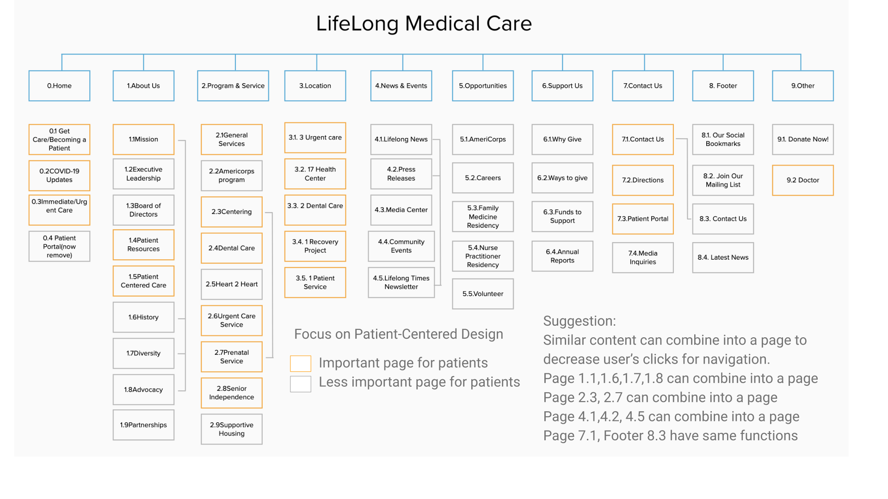
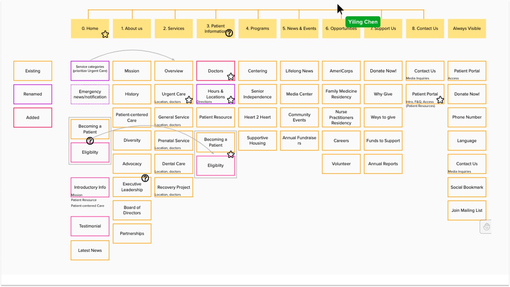
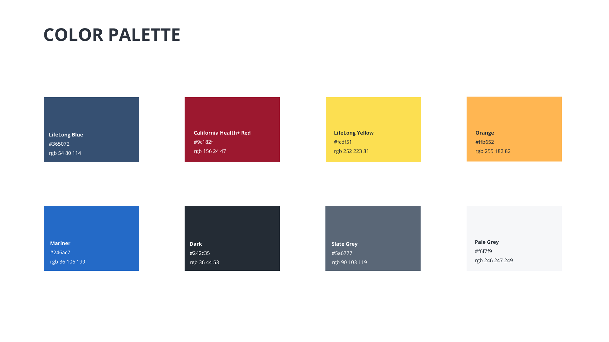
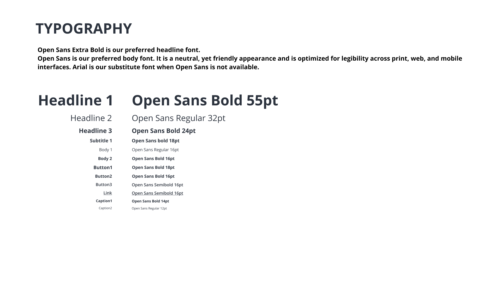
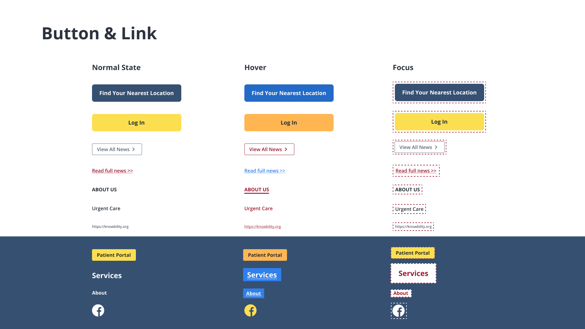

The Accessibility Internet Rally is a design competition that brings together organizations and tech experts to create websites that are fully accessible to persons with disabilities.
Our client is LifeLong Medical Care, a non-profit organization that provides high-quality health, dental, and social services to people of all ages who are underserved. Our team redesigned an accessible and responsive website for them.
Our team took first place in the competition.
Click to see the website!
I have the following responsibilities: Using the Web Content Accessibility Guidelines (WCAG) guideline 2.1, designing an inclusive website and coding a responsive website with HTML, CSS, and Bootstrap.
Mar. 2020- June. 2020
Jiaxuan Wang,
Yiyan Huang,
Debbie Chen,
Ann Tsai,
Claire Chang.
UX Designer,
FED Developer
Figma
Whiteboard
Zoom
WCAG guideline 2.1,
Gather Business Requirements,
User Interviews,
Card Sorting,
Information Architecture
Wireframes
Design System
Prototyping
User Testing
Github
HTML
CSS
Bootstrap
To redesign the website, we conducted an interview with our client in order to better understand their needs. They want people to understand what they do. Increasing donations and the number of patients is also important to LifeLong Medical Care.
We also conducted 5 user interviews to better understand the patients' healthcare experiences.
We used this spreadsheet to examined their current webpages in order to comprehend their current Information Architecture. We examined the pages to see if they matched the users' or business goals that we discovered in the first step. Then, in order to create a patient-focused design, we highlighted the most important information for patients. Similar content can be combined so that users do not have to click as many times.
After organizing their current pages, we discovered that some of the pages did not match the content, so we renamed the webpages. Also, we discovered that some information is important to users but is currently unavailable. As a result, we also added some pages, such as eligibility and testimonials. Then our team used card sorting to improve the information architecture.
Lifelong Medical Care provided us with their current style guild, but some of them are unable to meet the accessibility standard. We kept primary colors they provided, such as #365072, #9c182f and #fcdf51, then adjusted others so that it not only looks good, but also meets accessibility standards. We also configure the text style for type scale to ensure that our design is consistent. We also make sure that the color contrast and font size adhere to accessibility standards when designing the button and link. For example, the contrast ratio between the text and the background behind the text is at least 4.5:1. Images of large-scale text and text that is at least 18 point or 14 point bold have a contrast ratio of at least 3:1.
  
Due to time constraints, we started designing a website prototype after deciding on 6 key pages for users.
According to our interview, patients want to know what services lifelong medical care offers and if they are eligible for them.
They also want to find a doctor and the nearest location. As a result, these four links are prominently displayed on the homepage.
To ensure that our code meets accessibility standards in order to generate an accessible and responsible website, we create an excel spreadsheet that lists all of the requirements of the Web Content Accessibility Guidelines. We also examined if our websites meet the requirements by Web Accessibility Evaluation Tool, such as tota11y and WAVE, when coding. Knowbaility also invited a blind accessibility expert to test our website and provide feedback. We used github to collaborate on this website.
Click to see the website!I am grateful for the opportunity to attend this event because I learned the WCAG 2.1 guidelines and gained practical experience. The importance of having a blind expert test impressed me the most because some issues that could not be identified by evaluating tools were still inconvenient for the blind group. For example, we understood from blind experts' testing that a link could be provided for the phone number, allowing blind people to call the NGO directly by clicking on the link. This can simply save them a great deal of time. Even for ordinary people, such details make it easier for users to contact the organization. This experience also made me realize that when we create a better environment for people with disabilities, we benefit more people than just those with disabilities.